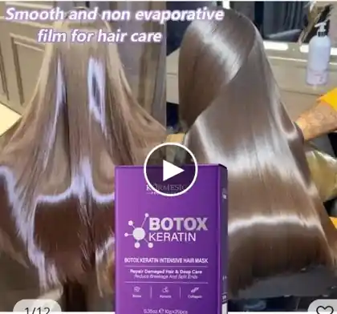

Brillo intenso
Ayuda a mejorar la luminosidad del cabello opaco.
Mascarilla con queratina y colágeno que ayuda a reducir el frizz, mejorar la apariencia de las puntas y devolverle vida al cabello seco.
★★★★★ 4.5/5 · Más de 1.000 valoraciones
*Resultados variables según el tipo de cabello. Producto cosmético; no es alisado permanente.


Planchas, secadores, tintes y decoloraciones pueden dejar el cabello seco, áspero y difícil de peinar. Esta mascarilla ofrece un cuidado cosmético intensivo que ayuda a suavizar la fibra capilar.
Una fórmula cremosa para incorporar fácilmente a tu rutina.
Ayuda a mejorar la luminosidad del cabello opaco.
Acondiciona el cabello seco y mejora su tacto.
Deja una sensación sedosa y manejable.
Ayuda a disminuir el aspecto encrespado.
Aplica, espera unos minutos y enjuaga.
Ideales para casa, viajes o gimnasio.
Ayuda a acondicionar la fibra capilar.
Favorece una sensación de flexibilidad.
Contribuye al brillo y suavidad.
Aporta cuidado cosmético al cabello frágil.

Lava y retira el exceso de agua.
Distribuye de medios a puntas.
Déjala actuar entre 5 y 15 minutos.
Enjuaga y finaliza como prefieras.

“Mi cabello quedó más suave y fácil de manejar.”
Compra verificada
“Buen producto, deja el cabello con mejor apariencia.”
Compra verificada
“Aroma agradable y más brillo después del uso.”
Compra verificadaPrecios en dólares estadounidenses.
Configura el enlace real de checkout antes de vender.